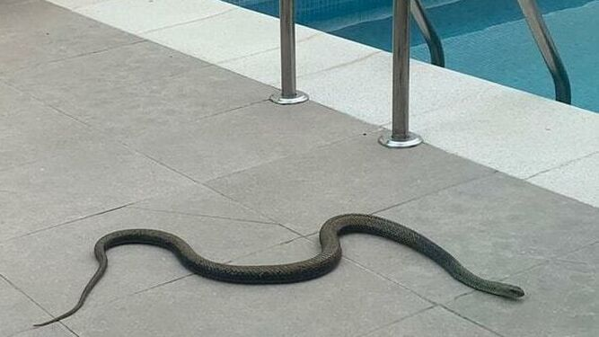

Los dueños de una vivienda en la localidad de Ogíjares, en el Área Metropolitana de Granada, se llevaron un buen susto en la tarde de este martes cuando vieron como una serpiente de gran tamaño campaba a sus anchas por el patio trasero de su casa. Al comprobar que el invertebrado reptaba cerca de la piscina, los dueños de la casa se encerraron en la vivienda ante el temor de que pudiera ser peligrosa y alertaron a la Policía Local de este municipio, que acudió al aviso para controlar la situación.
